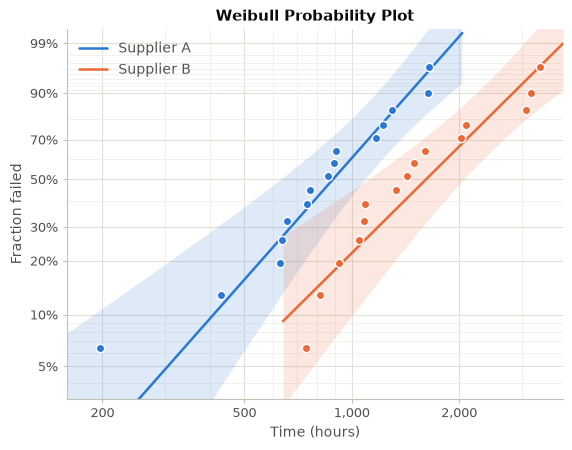
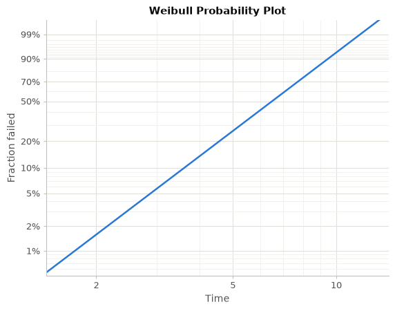

Conventions
This page is the reference for the conventions the rest of the documentation relies on: how data is laid out, what each variable name means, how censoring and truncation are flagged, which functions every model provides, and how the optional structure of a parametric model (offset, limited failure population, zero-inflation) is defined. Types of Data explains the ideas behind censoring and truncation, and The data model is the reference for every letter of a row (x, c, n, t, i, e, s, a, m, Z, w) and the rules between them; this page pins down the formats and the conventions every model shares.
Data Formats
The conventional formats used in SurPyval are:
xcnt = x variables, with c as the censoring scheme, n as the counts, and t as the truncation
xrd = x variables, with the risk set, r, at x and the deaths, d, also at x
xicnt = x variables, with c as the censoring scheme, n as the counts, and t as the truncation, and i as the item number
All functions in SurPyval have default handling for c and n. That is,
if these variables aren’t passed, it is assumed that there was one observation
and it was an observed event, such as a failure (c = 0, n = 1), for every x. Truncation defaults to none (an observation
window of \((-\infty, \infty)\)). For recurrent event models, if i is not passed
it is assumed that it is all from the same item.
Surpyval fit() functions use the xcnt format, because it is the most general: every combination of observed, censored and truncated data can be written in it. Data sometimes comes in different formats, so SurPyval has utilities available to convert from these formats into the xcnt and xrd formats (see Data Wrangling Examples). These other formats are:
fs = failure time array, f, and right censored (suspended) time array, s
fsl = fs format plus an array, l, for left censored times
fsli = fsl format plus an array, i, of
[lower, upper]pairs for interval censored data
The xcnt format
In xcnt data, row \(j\) says: “\(n_j\) items had the value \(x_j\), with censoring \(c_j\), and could only have been observed inside the window \(t_j = (t_{l,j}, t_{r,j}]\)”. Rows are independent, and any mix of censoring and truncation is allowed.
When you call fit(), SurPyval validates the arrays, converts them to numpy, groups identical (x, c, t) rows (summing their counts), and sorts them. The result is held in a SurpyvalData object, which you can also build yourself to see what SurPyval makes of your data:
import numpy as np
import surpyval as surv
data = surv.SurpyvalData(x=[1, 2, 3, [4, 5], 2], c=[0, 1, 0, 2, 1], tl=0)
print(data)
SurpyvalData: 5 items, 4 rows
x c n tl
[1.0, 1.0] 0 1 0.0
[2.0, 2.0] 1 2 0.0
[3.0, 3.0] 0 1 0.0
[4.0, 5.0] 2 1 0.0
Notice three things. The two right censored values at 2 have been merged into one row with n = 2. Because one row is an interval, x is stored as two columns, with the lower and upper values equal for the rows that are not intervals (with no interval row, x is stored as one column). And the scalar tl=0 has been expanded to a [tl, tr] row for every observation, with no right truncation (inf; the table shows a truncation column only where some bound is finite, and data.t holds both). The printout is the first rows; data.summary() describes the whole. Every fitter’s fit accepts a SurpyvalData object in place of the arrays (Weibull.fit(data), CrowAMSAA.fit(data); the two-clock fits, WeibullEquivalence and the others, take arrays, whose rows must line up with the second clock’s x2, as the relative survival fits, RelativeSurvival and ExcessHazard, take arrays whose rows line up with each unit’s age, year and stratum), refusing what the model cannot take (see The data model), its constructors SurpyvalData.from_observations and SurpyvalData.from_xrd read the other layouts (see Data Wrangling Examples), and SurpyvalData.to_json / SurpyvalData.from_json save and restore the data itself (to_dict / from_dict give the dictionary; EventHistoryData, ItemLifetime and ItemHistory have the same four). to_json() returns JSON text, or writes a file when given a path; from_json reads JSON text (a string starting with {) or the path of a file, and surpyval.from_json / surpyval.from_dict read a dataset or record as they read a model, by its "class" tag.
The letters of the data model
Beside x, c, n and t, a row can say which unit it belongs to (i), what kind of event ended it (e), the state the unit was in (s), whether the event ended the unit’s history for good (a), the covariates (Z) and a weight (w), and the data can carry readings taken on the units over time (m). The data model is the reference for every letter: what it means, its allowed values and default, the rules that tie them together (exact times and ranges on one row, the order of a unit’s rows, the default of a), one worked example of each shape of data, and which models take which letters.
The xrd format
The non-parametric estimators (Kaplan-Meier, Nelson-Aalen and Fleming-Harrington) think in terms of risk sets, so internally they work in the xrd format: at each distinct time x, r is the number of items at risk just before x (including those that fail at x) and d is the number of deaths (failures) at x.
x, r, d = surv.SurpyvalData(x=[1, 2, 3, 4, 5], c=[0, 1, 1, 0, 0]).to_xrd()
print("x:", x)
print("r:", r)
print("d:", d)
x: [1. 2. 3. 4. 5.]
r: [5 4 3 2 1]
d: [1 0 0 1 1]
Converting between the two formats loses information in both directions, so the conversions have restrictions:
SurpyvalData.to_xrdis exact for data that is observed or right censored (cof 0 or 1) and not right truncated. Left censored and interval censored data have no single time at which to count a death, so for those it fits the Turnbull estimator and returns its (possibly fractional) numbers at risk and deaths.SurpyvalData.from_xrdrecovers the individual observed and right censored values fromrandd. It cannot recover left truncation: if the risk set ever grows between two times (items entering late), the per-item entry times are lost, and it raises an error rather than returning a different study.xrd data given directly (to
SurpyvalData.from_xrd, or toKaplanMeier.from_xrdand the other non-parametricfrom_xrdmethods) must list each time once, asto_xrdreturns it. Each(x, r, d)row stands on its own, so rows given out of order are sorted by time (keeping theirrandd); a time listed twice is an error, since there is no single risk set to use for it.
The xicnt format
Recurrent event data (items that fail, are repaired and fail again) adds i, the identifier of the item each row belongs to. The conventions are:
xis the cumulative time of the event on that item (time since the item was new or first observed), not the time since the previous event. If you have inter-arrival times, take their cumulative sum per item.Each item may have at most one right censored row (
c = 1), which must be its last: it marks the end of that item’s observation. Likewise, at most one left censored row, which must be its first.Truncation (
tl/tr, ort) defines each item’s observation window, so it must be the same for every row of an item and contain all of that item’s events. The window is \((t_l, t_r]\), as for single lifetimes: an item entering attlis at risk just after it, so an event exactly attlis outside the window and refused (by every fit, the MCF and the trend tests alike). An item with no left truncation is taken to have been observed from time 0. Items observed over several separate periods can be described withwindows(each window(start, end]likewise).ngreater than one is only allowed on interval or left censored rows (several events known to have occurred in the same interval); for simultaneous exact events, repeat the row.In 2-D
x(mixed with interval counts) an exact event is written[t, t]; a pair with two different times is an interval count,c = 2.A scalar
i,cornapplies to every row, as a scalartl/trdoes.
from surpyval.recurrent import NonParametricCounting
x = [11, 24, 40, 9, 33, 5, 18, 41] # cumulative event times
i = [ 1, 1, 1, 2, 2, 3, 3, 3] # item identifiers
c = [ 0, 0, 1, 0, 1, 0, 0, 1] # 1 = end of observation of the item
mcf = NonParametricCounting.fit(x=x, i=i, c=c)
print(mcf.mcf([10, 30]))
[0.66666667 1.66666667]
Variable Names
The same variable names are used everywhere in SurPyval, in code and in these pages. For single event survival models, the xcnt format, they mean:
x = The random variable (time, stress etc.) array. For interval censored rows the entry is a pair
[lower, upper].xl = The random variable (time, stress etc.) array for the left interval of interval censored data.
xr = The random variable (time, stress etc.) array for the right interval of interval censored data.
c = An array with the censor flag for each x
n = The count array associated with x: the number of items that share the row’s value, flag and truncation. Must be positive integers (it is a count, not a weight; for weights use
w).w = The weight array associated with x (optional): how many units of the population each unit of the row stands for – a sampling, propensity or censoring weight – any positive finite number, beside the count
n.n = 3, w = 12.5is three identical units, each standing for 12.5. Multiplying every weight by a constant changes nothing; multiplying every count by a constant is more data. A fit givenwtakes the weighted estimate with a robust (sandwich) variance and refuses the bounds weights make invalid. The fitters that take it are the Kaplan-Meier, Nelson-Aalen and Fleming-Harrington estimators, the parametric distributions (maximum likelihood), the parametric regressions, Cox and Aalen’s additive model;SurpyvalDataholds it (rows are grouped only where their weights are equal too), andfit_from_dfreads it withw_col. See Weighted Data.t = the truncation values for the left and right truncation at x (must be two dim, or use tl and tr instead)
tl = one dimensional array or scalar value. If an array it is the value at which each value of x is left truncated. If a scalar all values of x are left truncated at the same value.
tr = one dimensional array or scalar value. If an array it is the value at which each value of x is right truncated. If a scalar all values of x are right truncated at the same value.
Z = the multi-dimensional array of covariates for each x, one row per observation, used by the regression models.
i = the unit (item) each row belongs to (
idsis its other name inSurpyvalData).e = the event type of each row: the failure mode for competing risks, or, with
s, the state the unit moved into at x; blank where it had not.s = the state the unit was in during the row (multi-state data); without it every row starts from the one initial state. See The data model.
a = whether the row’s event ended the unit’s history for good (1) or the unit carried on (0); by default 1 on a unit’s last event and 0 on an earlier one. See The data model.
m = the readings taken on each unit over its life (a
Measurementsobject), linked to the rows byi. See The data model.
Times are plain numbers, in whatever unit you choose: SurPyval has no unit of time, and every model answers in the units it was given. Durations (numpy.timedelta64, pandas Timedelta) and dates (datetime64, Timestamp) are refused with a ValueError wherever a time is accepted (x, xl, xr, t, tl, tr, and a model function’s query), because numpy converts a duration to its storage ticks – seconds or nanoseconds, depending on the dtype pandas picked – without a word. Convert them first, in the unit you want:
import numpy as np
import pandas as pd
import surpyval as surv
installed = pd.to_datetime(["2023-01-01", "2023-01-05", "2023-02-01"])
failed = pd.to_datetime(["2023-03-01", "2023-06-17", "2023-04-11"])
days = (failed - installed) / pd.Timedelta(days=1)
print(days.to_numpy())
print(surv.Weibull.fit(days).params)
[ 59. 163. 69.]
[110.3622733 2.25521401]
x cannot be combined with xl/xr, and t cannot be combined with tl/tr. tl and tr can each be used alone.
Non-parametric models are better defined in the “xrd” format. These are taken to mean:
x = array of random variables
r = array with the number of items at risk for each value in x
d = array with the number of failures/deaths at each value in x
For recurrent event data it is necessary to know which item has a subsequent event. For this we use all the same as described above with the addition of:
i = array with the item number/identifier for each value in x
Other areas of the package add a few more names, always with the same meaning:
e = the event type, or cause, of each row, for competing risks (
Nonefor a censored row with no attributed cause).y = the measured degradation value at each
x, for degradation models (withiidentifying the unit).
A parametric fit refuses times its distribution cannot describe, with a ValueError that says so: for a distribution on \((0, \infty)\) (Weibull, Gamma, Exponential, LogNormal, …) an observed time at or below 0, or a time left censored at or below 0. A unit right censored at 0 is accepted (it carries no information). A negative time is refused whatever its censoring, by the univariate fits (fit, fit_from_df, a zero-inflated or limited-failure fit and every how) and by a parametric regression on such a baseline (the AFT, PH, PO and AH families, accelerated life and frailty models, by fit, fit_from_df, a formula or fit_tvc) alike, as R’s survreg and lifelines do: no unit can be censored before time 0, and the likelihoods are not defined there. An offset fit’s support starts at its offset gamma, which lies below every time, so it takes negative times. A distribution on the whole line (Normal, Gumbel, Logistic) takes negative times.
Every fitter with a fit also has a fit_from_df, which takes a pandas
DataFrame and the names of its columns in place of these arrays, passes
every other option to fit, and gives the model fit gives on the same
arrays (the conformance suite checks this for every model). Every
DataFrame entry point names a column argument after the array it fills,
with a _col suffix, and _cols for a list of columns:
x_col='hours', c_col=, n_col=, xl_col= / xr_col=,
tl_col= / tr_col=, e_col=, i_col=, y_col=, and
Z_cols= for the covariates (or a formula, where the model supports
one). The univariate tl_col / tr_col also take one number, a
truncation shared by every row; a copula takes a column per dimension
(x_cols=['pump', 'motor']). The names of v0.21 without the suffix
(Weibull.fit_from_df(df, x='hours', c=...), and x=, y=,
i= of the degradation fitters) were removed in v0.23 and raise
TypeError.
from surpyval.recurrent import NonParametricCounting
table = pd.DataFrame({'hours': [5.0, 8, 12, 20, 25, 30],
'failed': [0, 0, 0, 1, 0, 1]})
km = surv.KaplanMeier.fit_from_df(table, x_col='hours', c_col='failed')
log = pd.DataFrame({'hours': [3.0, 9, 20, 5, 12],
'unit': [1, 1, 1, 2, 2], 'end': [0, 0, 1, 0, 1]})
mcf = NonParametricCounting.fit_from_df(log, x_col='hours', i_col='unit',
c_col='end')
print(km.sf(10), mcf.mcf(10))
0.6666666666666667 1.5
Censoring Flag Conventions
For the censoring values, surpyval uses the convention used in Meeker and Escobar, that is:
-1 = left
0 = failure / event
1 = right
2 = interval censoring. Must have left and right value in x
This convention gives an intuitive feel for the placement of the data on a timeline: the event (the failure, the death, the relapse) is at the recorded value (0), somewhere to its left (-1), somewhere to its right (1), or between two values (2).
|
Meaning |
What is known about the value \(X\) of row \(j\) |
|---|---|---|
-1 |
left censored |
\(X \le x_j\) |
0 |
observed |
\(X = x_j\) |
1 |
right censored |
\(X > x_j\) |
2 |
interval censored |
\(x_{l,j} < X \le x_{r,j}\) |
The same flags are used throughout the package: by the regression models, the recurrent event models (where c = 1 marks the end of an item’s observation), the copulas (one censoring array per dimension), and the start-stop (time-varying covariate) form of the Cox model, where c = 0 is an event at the end of the interval and c = 1 is right censored (the proportional-intensity models’ start-stop form is the same, with c = 2 for a count n of events within the interval). The one variation is in competing risks, where c may be omitted because a missing cause (e of None) already says that a row is censored.
The words for these ideas differ between fields (failure and event, suspension and right censored, reliability and survival); the Glossary maps them to each other.
c is a censoring flag, the opposite of the event flag (1 = failed) of most spreadsheets, of R’s Surv(time, event) and of lifelines’ event_col: pass c = 1 - event. A flag passed the wrong way round fits without complaint, so a fitted model’s printout shows the data it was fitted to, counted in units (weighted by n), for example Data : 60 units: 9 events at 9 unique times, 51 right censored: if you had 51 failures, the flag was read backwards. The counts are weighted by n, and the number of distinct event times shows how far they are aggregated.
Truncation conventions
The observation window of row \(j\) is \((t_{l,j}, t_{r,j}]\). With no truncation it is \((-\infty, \infty)\).
An observed value must lie strictly above its left truncation bound, \(t_{l,j} < x_j\), and at or below its right truncation bound. A value equal to its own left truncation bound would have a zero-length observation window, and is rejected.
Non-parametric risk sets use the (entry, exit] convention: an item with window starting at \(t_l\) and value \(x\) is at risk at time \(s\) when \(t_l < s \le x\). An item entering at exactly an event time is not at risk for that event.
A censored value is only known to lie inside its own truncation window, so a left censored row with a finite \(t_l\) is used as the interval \((t_l, x]\), and a right censored row with a finite \(t_r\) as \((x, t_r]\). This happens automatically.
Function Conventions
The conventions for single event SurPyval models are that each object returned from a fit() call has the ability to compute the following:
df()- The density functionff()- The CDFsf()- The survival function, or reliability functionhf()- The (instantaneous) hazard functionHf()- The cumulative hazard function
These are the functions \(f(x)\), \(F(x)\), \(R(x)\), \(h(x)\) and \(H(x)\); how each can be computed from any of the others is shown in Handy References - Aide-mémoire. One caution: a non-parametric estimate (Kaplan-Meier and the others) is a step function, so its hf() and df() are the sizes of the jumps between the points you ask for, not rates, and change with how finely you space them; smoothed_hf() gives a kernel-smoothed hazard rate instead. Most single event models also provide:
qf()- The quantile function, the inverse of the CDF.qf(0.1)is the B10 life (the 10th percentile of the time to the event), andqf(0.5)the median. Everyqf– a fitted model’s, with or without covariates, and a distribution’s own (surv.Weibull.qf(u, alpha, beta)) – givesnanwith one warning for a probability outside [0, 1] (most often a percentage given for a probability,qf(10)for the B10 life), as scipy’sppfgivesnan;nangivesnan.cb()- Confidence bounds on a function (the survival function by default).mean()- The mean.random()- Random samples from the model.plot()- A plot of the model against the data it was fitted to.
The function a confidence bound is on is chosen with on=, named as the method is: "sf", "ff", "Hf" and, where the model offers bounds on them, "hf", "df" or "cif". on="R" and on="F" are accepted spellings of "sf" and "ff", after the reliability and the unreliability: model.cb(5, on="R") is model.cb(5, on="sf"). Both spellings are kept, and every argument named on that takes "sf" or "ff" takes them, plot_nonparametric and compare_to of a Bayesian fit included (unless its distribution has a parameter named R or F).
For a parametric model, params holds the fitted parameters in the order given by model.parameter_names (the distribution’s parameter_names; each is also an attribute, e.g. model.alpha), and those names are what fixed={...} refers to. Fitted parametric models also have log_likelihood (a number) and neg_ll(), aic(), aic_c() and bic() (methods) for comparing fits, spelt so on every model that has them, covariance() for the parameters’ covariance and standard_errors() for their standard errors (the square roots of its diagonal, an array in its order; so on every model that has a covariance, the Cox model included), cs(x, given) for the conditional survival \(R(given + x)/R(given)\), var(), moment() and entropy(), and param_cb() for confidence bounds on the parameters themselves. Non-parametric models add, among others, rmst() (restricted mean survival time) and simultaneous confidence bands with band(); see Parametric SurPyval Modelling and Non-Parametric SurPyval Modelling.
Models from other areas follow the same pattern with one extra argument:
Regression models take the covariates as the second argument,
model.sf(x, Z).Competing risks models take the cause,
model.cif(x, event).
The conventions for recurrent event SurPyval models are that each object returned from a fit() call has the ability to compute the following:
iif()- instantaneous intensity functioncif()- cumulative intensity function
The cumulative intensity is the expected number of events by time \(x\). It is the parametric counterpart of the mean cumulative function, which the non-parametric NonParametricCounting model provides as mcf().
model = surv.Weibull.fit([3, 4, 5, 6, 7, 8, 9, 10])
print("parameter names :", model.parameter_names)
print("params :", model.params)
print("R(5), F(5) :", model.sf(5), model.ff(5))
print("h(5), H(5) :", model.hf(5), model.Hf(5))
print("median :", model.qf(0.5))
parameter names : ['alpha', 'beta']
params : [7.2837685 3.20098057]
R(5), F(5) : 0.7408781295794337 0.2591218704205664
h(5), H(5) : 0.1920070643253731 0.2999191347164514
median : 6.495750390823678
Query shapes
Shape in, shape out. Every function evaluated at query points – times x, or probabilities for qf – returns a result of the query’s shape, whatever the model:
a scalar query (a Python number or a 0-d array) gives a numpy scalar (
np.float64);a 1-D query (a list, tuple or array) gives a 1-D array of its length, and a 2-D query an array of its 2-D shape, with the values the flattened query would give;
an empty query gives an empty array of its shape.
This holds for sf, ff, Hf, hf, df and qf, the per-cause cif, the recurrent cif, iif and mcf, sf_tvc and Hf_tvc, smoothed_hf, and the degradation and process models’ life functions, and for a distribution’s own functions called with explicit parameters (surv.Gamma.sf([5, 10], 8, 3) is surv.Gamma.sf(np.array([5, 10]), 8, 3); a list or tuple, of times or of parameters, is taken as an array). A confidence bound (cb, R_cb, cif_cb, mcf_cb, bootstrap_cb, band, quantile_cb) adds its own last axis when it is two-sided: shape query_shape + (2,), [lower, upper] on the last axis; a one-sided bound has the query’s shape.
With covariates the query’s shape is that of x: Z is one row, used at every time, or one row per time of a 1-D x. A single time with several rows of Z gives one value per row, and any other number of rows is refused with a ValueError. The grid of every row at every time has shape (n_rows,) + x.shape: the Cox and parametric regression models, and the survival tree and forest, give it with grid=True. (Before 0.24 the tree and forest gave the grid whenever they had a matrix of covariates; they now follow the rule.) A copula’s points are (x1, x2) pairs, so its query has a trailing axis of 2: an (m, 2) query gives (m,) and a single pair a scalar.
A step estimate’s hf and df are the jumps between the points asked for (see above), so a point asked for alone can differ from the same point inside an array; the shapes follow the rule all the same.
km = surv.KaplanMeier.fit([1, 2, 3, 4, 5, 6, 7, 8], c=[0, 1, 0, 0, 1, 0, 0, 1])
print(repr(km.sf(4))) # a scalar
print(km.sf([[2, 4], [6, 7]])) # a 2-D query keeps its shape
print(km.cb(4)) # [lower, upper] at one time
print(km.cb([[2, 4], [6, 7]]).shape) # query shape + (2,)
print(km.sf([]).shape)
np.float64(0.5833333333333334)
[[0.875 0.58333333]
[0.38888889 0.19444444]]
[0.18018889 0.84406869]
(2, 2, 2)
(0,)
Missing values
A missing value (nan) is handled by one rule across the package:
Prediction: NaN in, NaN out, element by element. A missing covariate, time or probability makes exactly the outputs that depend on it NaN. Other rows are unaffected, and no method returns a number or hangs. The exception is a method whose input describes one unit’s history (
predict_rul,induced_life,sf_tvc,mcf): it raises aValueErrornaming the input.Fitting: drop with one warning where each row is an independent observation; raise where a row is only part of one (a time-varying interval, a recurrent-event row, a degradation measurement). The warning is a single
UserWarninggiving the count, “Dropped k of n rows …”. A missing grouping label (stratum, frailty group) drops the observation, with a warning. A missing time or response always raises.
An infinite covariate is not missing: it is dropped at fit time along with the missing ones (the warning says “missing (NaN) or infinite”), and at prediction gives the model’s limiting value rather than NaN.
import warnings
rng = np.random.default_rng(0)
Z = rng.normal(size=(100, 2))
x = 10 * rng.weibull(1.5, 100) * np.exp(-0.5 * Z[:, 0])
ph = surv.WeibullPH.fit(x, Z)
# The second row's first covariate is missing: only its prediction is NaN
print(ph.sf([5, 5, 5], [[0.5, 1.0], [np.nan, 1.0], [-0.5, 0.2]]))
# Fitting drops the row with a missing covariate, and says so once
Z[3, 1] = np.nan
with warnings.catch_warnings(record=True) as caught:
warnings.simplefilter("always")
refit = surv.WeibullPH.fit(x, Z)
print([str(w.message) for w in caught if "Dropped" in str(w.message)])
[0.70703098 nan 0.84754313]
['Dropped 1 of 100 rows with a missing (NaN) or infinite covariate value.']
Random draws and seeds
Every method that draws random numbers – random(), a copula’s sample_uv(), the recurrent-event simulations, the bootstraps behind confidence bounds such as bootstrap_cb(), and the fit of a survival tree or random survival forest (its bootstrap samples and the features drawn for each split) – takes its seed as random_state and follows one rule for it:
None, the default, draws from numpy’s global random number generator, sonp.random.seed(...)makes every draw reproducible, parametric or not.An int, or a
numpy.random.Generator, gives a stream of its own (numpy.random.default_rng(seed)) that neither depends on nor advances the global one.
import numpy as np
km = surv.KaplanMeier.fit([10, 20, 30, 40, 50])
weibull = surv.Weibull.from_params([100, 2])
np.random.seed(0)
first = km.random(5), weibull.random(2)
np.random.seed(0)
second = km.random(5), weibull.random(2)
print(first[0], second[0])
print(first[1], second[1])
print(km.random(5, random_state=1), km.random(5, random_state=1))
print(weibull.random(2, random_state=1), surv.Weibull.random(2, 100, 2, random_state=1))
[20. 20. 40. 30. 40.] [20. 20. 40. 30. 40.]
[112.0683168 96.08450165] [112.0683168 96.08450165]
[30. 10. 50. 10. 40.] [30. 10. 50. 10. 40.]
[ 84.68024662 173.35078513] [ 84.68024662 173.35078513]
Offset, limited failure population and zero-inflation
A parametric fit can add up to three pieces of structure to the base distribution, each switched on by a keyword of fit() (or a keyword of from_params()):
Offset (
offset=True, parameter \(\gamma\)): nothing can fail before \(\gamma\), a failure-free period or minimum life. This is the “three parameter Weibull”. It is only available for distributions supported on the half line \([0, \infty)\).Limited failure population (
lfp=True, parameter \(p\)): only a proportion \(p\) of the population is susceptible to the failure mode; the remaining \(1 - p\) never fails. This is also called a defective subpopulation or cure model.Zero-inflation (
zi=True, parameter \(f_0\)): a proportion \(f_0\) fails at exactly \(x = 0\) (dead on arrival). Zero-inflated data contains exact zeros, which an ordinary lifetime distribution cannot produce. It is only available for distributions whose support starts at 0.
With \(F_0\) and \(R_0\) the base distribution, the full model is
and the defaults \(\gamma = 0\), \(p = 1\) and \(f_0 = 0\) give back the base distribution. The conventions to remember are:
\(p\) (the model’s
lfp_p;pbefore v0.23) is the proportion that ever fails, including the dead-on-arrival fraction, so \(F(\infty) = p\) and \(f_0 \le p\). Writing it this way means every function (ff,sf,df, the likelihood,mean,qf) uses the same constant \(p - f_0\) for the continuous part, and they are mutually consistent.The zero-inflation mass sits at \(x = 0\), even when there is an offset. Before 0 nothing has failed: \(F(x) = 0\) and \(R(x) = 1\) for \(x < 0\).
Between 0 and the offset, \(F(x) = f_0\) and \(R(x) = 1 - f_0\): the base distribution has not started.
A row that says only “failed by \(t\)” may have failed at 0, so it includes the mass: left censoring at \(t\) and an interval \([0, t]\) (lower bound 0) each contribute \(f_0 + (p - f_0) F_b(t - \gamma)\), the likelihood of zero-inflated data with such rows (Moulton and Halsey 1995; Braekers and Grouwels 2016; Grouwels 2015, section 2.1). An interval whose lower bound is above 0, \((a, b]\), leaves the mass out: \((p - f_0)(F_b(b - \gamma) - F_b(a - \gamma))\). Before this change (see the changelog) an interval \([0, t]\) was read as \((0, t]\), without the mass.
Truncation follows the same rule: a left truncation at or below 0 truncates nothing (a unit cannot enter before it exists, and the mass at 0 is inside the window), and a late entry at \(t_l > 0\) divides by \(R(t_l) = 1 - f_0 - (p - f_0) F_b(t_l - \gamma)\), so \(f_0\) cancels for those units. A right truncation at \(t_r \ge 0\) keeps the mass: the window’s probability is \(F(t_r)\). These are
ZeroInflated’s rules too, so its fit with no covariates is the univariate fit. An exact 0 attl = 0is still refused, as any observation at its own truncation time is.df(0)of a zero-inflated model is the point mass \(f_0\) itself (a probability, as the likelihood uses it), not a density.df(x, continuous=True)is the continuous part alone, \(p - f_0\) times the base density at \(x - \gamma\), which integrates to \(p - f_0\): use it to integrate the density numerically.hf(0)of a zero-inflated model is the point mass’s discrete hazard \(f_0 / R(0^-) = f_0\), the probability of failing at 0 given survival to it, as a discrete distribution’s hazard \(P(T = k) / R(k - 1)\);Hfjumps there by \(-\log(1 - f_0)\). Itscbonhfanddfat 0 is the Wald bound on \(f_0\).qf(q)is infinite for \(q \ge p\) (that fraction of the population never fails), and 0 for \(q \le f_0\).mean()is the mean lifetime \(E[T]\), which is infinite for an LFP model (\(p < 1\)), since some units never fail;moment(n)(\(n \ge 1\)) andvar()are infinite too.mean(defective=True)is the defective mean \((p - f_0)\,E[\gamma + X_0]\), the integral of \(t\,dF(t)\) over the units that fail (andmomentandvartake the same keyword). For a zero-inflated model without LFP the two agree: the zeros contribute nothing. Neither is the mean life of the units that fail, \(\gamma + E[X_0]\).random()draws lifetimes,qf(u)for one uniformuper draw, for every model:inffor a unit that never fails and 0 for one dead on arrival.random_data()draws the same units as xcnt survival data,(x, c, n, t), with the units that never fail right-censored after the last failure, ready to refit.model.extrasholds thegamma,lfp_pandf0the model has, as keywords offrom_params(), andmodel.with_params(params)is the same model with other distribution parameters (from_params(model.params)alone drops them).LFP and zero-inflated models can only be fitted by maximum likelihood (
how="MLE").
variants = {
"base": surv.Weibull.from_params([10, 2]),
"offset gamma=5": surv.Weibull.from_params([10, 2], gamma=5),
"lfp_p=0.3": surv.Weibull.from_params([10, 2], lfp_p=0.3),
"zi f0=0.1": surv.Weibull.from_params([10, 2], f0=0.1),
"lfp + zi": surv.Weibull.from_params([10, 2], lfp_p=0.3, f0=0.1),
}
print(" F(0) F(5) F(15) F(1e6)")
for name, m in variants.items():
print(f"{name:16s}", np.round(m.ff([0, 5, 15, 1e6]), 4))
F(0) F(5) F(15) F(1e6)
base [0. 0.2212 0.8946 1. ]
offset gamma=5 [0. 0. 0.6321 1. ]
lfp_p=0.3 [0. 0.0664 0.2684 0.3 ]
zi f0=0.1 [0.1 0.2991 0.9051 1. ]
lfp + zi [0.1 0.1442 0.2789 0.3 ]
Reading across the rows: the offset model has not started by 5; the LFP model levels off at 0.3; the zero-inflated model starts at 0.1; and the combined model starts at 0.1 and levels off at 0.3, because the 0.1 at zero is part of the 0.3 that ever fails. See Parametric SurPyval Modelling for fitting these models to data, and Example Applications for an LFP model used to design a burn-in test.
The combined model shows the other conventions. Its mean lifetime is infinite, since 70% of the units never fail; its lifetimes come out as inf for those units and 0 for the ones dead on arrival; and with_params keeps its lfp_p and f0:
m = variants["lfp + zi"]
print("mean:", m.mean(), " defective mean:", m.mean(defective=True))
np.random.seed(1)
print("lifetimes:", m.random(6))
print("extras:", m.extras)
print("F(15) with alpha = 20:", m.with_params([20, 2]).ff(15))
mean: inf defective mean: 1.7724538509055157
lifetimes: [ inf inf 0. inf 5.16028325 0. ]
extras: {'lfp_p': 0.3, 'f0': 0.1}
F(15) with alpha = 20: 0.18604343505381538
Units
Every fit, fit_from_df and from_params takes an optional
unit=: the unit the data were measured in, of any kind – "hours",
"km", "cycles", "pump starts". It is a label. The model keeps it
as model.unit, shows it in its printout and on its plots, and saves it
with to_dict, exactly as it was typed ("hrs" stays "hrs" and
"mm/s" stays "mm/s"; only spaces at its ends are dropped); nothing is
converted. Where two labels are compared – the data’s and the fit’s, the
records of one dataset, two models – they are read with pint, so "h", "hrs" and "hours" agree
(and "cycles" is a count, not pint’s angle), and the label kept is the one
typed for the result. Left out, it is None: unknown, as before.
model = surv.Weibull.from_params([1000, 2], unit="hrs")
print(model.unit)
print(model)
hrs
Parametric SurPyval Model
=========================
Distribution : Weibull
Unit : hrs
Fitted by : given parameters
Parameters :
alpha: 1000
beta: 2
A plot names its time axis by what the unit measures, with the label as typed: “Time (hrs)”, “Distance (km)”, or “Usage (cycles)” for a count or any other unit. A label already on the axes is kept. Tools that combine models (RePyability, say) can convert between units with pint from the labels.
The two helpers SurPyval uses for labels are public, in surpyval.utils:
normalise_unit(label) gives the label as a model stores it (as typed,
spaces at its ends dropped; None stays None), and same_unit(a,
b) says whether two labels name the same unit, read with pint. A tool that
combines models uses same_unit to check they are in one unit before it
adds their times. It compares; it does not convert: "h" and "min" are
not the same unit, and None (unknown) is the same only as None.
from surpyval.utils import same_unit
print(same_unit("h", "hours"), same_unit("hrs", "days"))
True False
The data classes carry the unit too: ItemLifetime(..., unit="hours"),
SurpyvalData(..., unit=), from_items (from its records, which must
agree), from_observations, from_histories, from_dataframe and
handle_xicn all take it, every reshape, slice, to_first_events,
to_gaps and the JSON form keep it, the summary and printout show it,
and fit(data) gives it to the model, so it is given once:
Weibull.fit(SurpyvalData.from_items(items_in_hours)).unit == "hours". A
unit= at the fit that names a different unit from the data’s is
refused, as are records in different units in one dataset; nothing is
converted.
Rescaling a model’s time
A label is not converted, but a model’s time can be:
model.rescale_time(factor) is the model whose survival function is
\(R(\text{factor}\,t)\), the same life on another clock. A pump that
runs a quarter of the time ages a quarter of an hour in each hour of the
calendar, so its life on the calendar is rescale_time(0.25) of its
life in operating hours; a life fitted in hours is, in days,
rescale_time(24, unit="days"). Without unit the model keeps its
label, which is right for a duty cycle (calendar hours are still hours).
x = [410, 620, 790, 950, 1100, 1300, 1550, 1900]
pump = surv.Weibull.fit(x, unit="hours") # operating hours
calendar = pump.rescale_time(0.25) # runs 25% of the time
print(calendar.params, calendar.unit)
print(calendar.sf(4000), pump.sf(1000))
[4.87165550e+03 2.54032721e+00] hours
0.5455033124428572 0.5455033124428572
The rescaled model is the fit to the data in the new unit (principle 6 of
Design Principles), found without refitting. Each parameter moves
by its role: a time (a scale, a location, an end of the support, the offset
gamma) is divided by factor, a rate multiplied by it, the log of a
time (the LogNormal’s mu) less log(factor), and a shape, lfp_p
and f0 kept. The covariance follows by the delta method, exactly, so a
shape’s standard error is unchanged and a time’s divided by factor;
the data move to the new unit with it, so every bound – Wald,
likelihood-ratio, bootstrap, pivotal – is the refit’s; and the
log-likelihood rises by log(factor) for each exact observation, a
density per unit of time (every other contribution is a probability). A
model without its data (built from parameters, or restored from a dict
saved without it) keeps its Wald bounds, but its neg_ll, aic and
bic refuse, as moving them needs the count of exact observations.
MixtureModel moves each component and keeps the weights; the point
masses NeverOccurs and InstantlyOccurs are the same on every
clock. Three kinds of distribution refuse, saying what to do: a
distribution of counts (a count has no unit of time), the Beta, whose
support (0, 1) becomes (0, 1 / factor) (the Beta4 with ends 0 and
1 / factor is that model), and a CustomDistribution, which does
not say which of its parameters are times (define it on the new clock).
Plots
Every model’s plot draws in one theme, surpyval.plotting: a fixed
palette taken in order on each axes (the first model blue, the next orange,
…), checked to stay distinguishable under the common colour-vision
deficiencies; 2-point lines and ringed points; confidence bounds as a pale
band of the curve’s colour; hairline grids; no top or right spine; greys for
text. Where a plot shows an estimate from the data behind a fitted model
(the recurrent-event and regression plots), the data’s step is grey and the
model is in colour. A color (or any line keyword) passed to plot is
used as given.
On a probability plot the probability axis is labelled as densely as the distribution’s scale has room for, the tails included (1%, 99%, 99.9%, …), and the time axis at 1, 2 and 5 a decade on log scales and at round times on linear ones. Several models drawn on one axes widen it to cover them all.
import numpy as np
x = surv.Weibull.random(30, 1000, 2.2, random_state=1)
ax = surv.Weibull.fit(x[:15], unit="hours").plot(label="Supplier A")
surv.Weibull.fit(x[15:] * 1.8, unit="hours").plot(ax=ax, label="Supplier B")
surv.plotting.style_legend(ax);

surpyval.plotting.set_theme(False) turns the theme off (matplotlib’s
colours, and axes left as they are); surpyval.plotting.style_axes(ax)
gives axes of your own its look, and surpyval.plotting.rc_params() the
whole theme as matplotlib.rcParams.
Saving and Loading Models
Almost every fitted SurPyval model can be saved and restored (the exceptions are listed at the end of this section):
model.to_dict()returns a dictionary of plain Python types (strings, numbers, lists), so it can be written as JSON or stored directly in a document database such as MongoDB.model.to_json(path)writes that dictionary to a JSON file;model.to_json(), with no path, returns the JSON text instead. The dictionaries, files and text are strict JSON, readable by any JSON parser (see below for how infinite and NaN values are stored).surpyval.from_dict(d)andsurpyval.from_json(path)restore a model of whichever class wrote it (from_jsonalso takes the JSON text itself). You do not need to know whether the file holds a Weibull, a Kaplan-Meier estimate, a Cox model or a recurrence model; the readers work it out from the dictionary.Each model class also has its own
from_dict/from_jsonfor when the class is known in advance (for examplesurv.Parametric.from_dictorsurv.NonParametric.from_dict; note these are the model classes, not fitters such assurv.Weibullorsurv.KaplanMeier). They raise aValueErrorif handed a dictionary written by a different class, and otherwise check a dictionary exactly assurpyval.from_dictdoes.
import os
import tempfile
weibull = surv.Weibull.fit([3, 4, 5, 6, 7, 8, 9, 10])
km = surv.KaplanMeier.fit([3, 4, 5, 6, 7, 8, 9, 10], c=[0, 0, 1, 0, 0, 1, 0, 0])
with tempfile.TemporaryDirectory() as folder:
path = os.path.join(folder, "km.json")
km.to_json(path)
restored_km = surv.from_json(path)
restored_weibull = surv.from_dict(weibull.to_dict())
print(type(restored_weibull).__name__, restored_weibull.params)
print(type(restored_km).__name__, restored_km.sf(6), km.sf(6))
Parametric [7.2837685 3.20098057]
NonParametric 0.6000000000000001 0.6000000000000001
Every dictionary carries a "schema" version number, an integer: the oldest version that reads the file correctly, so a model with no infinite or NaN value (and, for a regression model, no formula feature that older releases cannot rebuild, such as C(g) or scale(z), and, for a non-parametric estimate, no bounds from set_support and, if its data were left truncated, no stored sample size for band, and, for a regression model, a baseline at Z = 0: not one kept at the covariate means with center=True) is stamped 1 and still loads in older releases. A model fitted with sampling weights is stamped 3 and a stratified Cox model 4, which older releases refuse rather than misread (one as unweighted, the other as its first stratum’s baseline); so is a ParametricCompetingRisks fitted to left- or interval-censored rows (schema 4), whose covariance between causes SurPyval 0.26 would drop, and data with states, a SurpyvalData with s (schema 4), whose states it would drop; and a joint model with the accelerated survival part, JointAFT (schema 5), which SurPyval 0.28 would read as a proportional hazards one, and a joint model with failure modes ("causes", schema 5), whose first mode’s parameters it would take as the model’s. A file written by a newer version of SurPyval than the one installed is refused with an error asking you to upgrade, rather than being misread. The readers also refuse, with a ValueError that says what is wrong, a dictionary that has lost an entry (it names the missing key), a "schema" that is not an integer, and a univariate parametric model whose parameters are outside the distribution’s bounds (a negative Weibull scale, say). The class-level readers (surv.Parametric.from_dict and the rest) make the same checks.
A fitted model can hold values that are not finite numbers: an untruncated bound is -inf or inf, a Kaplan-Meier cumulative hazard is inf after the last death, and a variance can be undefined (nan). JSON has no way to write these (Python’s json writes Infinity and NaN, which JavaScript and many databases refuse), so to_dict writes each one as null and records what it stood for under "non_finite": for each kind ("inf", "-inf", "nan") a list of JSON Pointers to its values, relative to the dictionary holding the record. Every SurPyval reader puts the original values back; another program sees null where no number applies, and can read the record to recover them. Files written by earlier versions of SurPyval, which contain Infinity and NaN, still load.
all_die = surv.KaplanMeier.fit([3, 4, 5])
d = all_die.to_dict()
print(d["H"], d["non_finite"])
print(surv.from_dict(d).H)
[0.4054651081081643, 1.0986122886681096, None] {'inf': ['/H/2'], 'nan': ['/greenwood/2']}
[0.40546511 1.09861229 inf]
A restored model keeps what it needs to make predictions, but by default not the data it was fitted to. A univariate parametric model also keeps its covariance matrix, so cb (Wald bounds) works, and its fitted negative log-likelihood and the sample size of its information criteria (see Comparing models: information criteria), so neg_ll(), aic(), aic_c() and bic() work; a parametric regression model keeps the same. Anything else that needs the data, such as plot(), bootstrap or likelihood-ratio confidence bounds, residuals and diagnostics, raises an error on a restored model. What each family keeps is described on its how-to page; recurrent-event models, for example, keep no covariance, so their cif_cb needs a refit.
The univariate parametric and non-parametric models can carry their data with them: to_dict(with_data=True) adds the x, c, n and t arrays, and a model restored from that dictionary has plot() and likelihood-ratio bounds (method="lr") (parametric) or bootstrap_cb() (non-parametric) again. to_json(path, with_data=True) writes that dictionary to a file (to_json(path) leaves the data out, as to_dict() does); the other models do not store their data, and their to_json refuses with_data=True with a TypeError.
print("BIC, restored and fitted:", restored_weibull.bic(), weibull.bic())
try:
restored_weibull.plot()
except ValueError as err:
print("without the data:", str(err)[:60], "...")
with_data = surv.from_dict(weibull.to_dict(with_data=True))
print("with the data :", with_data.data["x"])
BIC, restored and fitted: 39.80208818994548 39.80208818994548
with the data : [ 3. 4. 5. 6. 7. 8. 9. 10.]

A few models cannot be saved, and say so when to_dict is called: an accelerated-life model with a life model of your own, and a copula of a custom family. A regression fitted with a formula keeps its categorical levels and fitted transform statistics (scale(), poly(), splines), so it is read back predicting exactly as before. A model of a distribution made with Discretize is read back like any other. A model of a CustomDistribution stores only the distribution’s name, since its cumulative hazard is a Python function: it is read back in any session that has constructed the same CustomDistribution (same name) again, and otherwise from_dict raises an error that says so. Keep the data (for example with SurpyvalData.to_json) whenever you may need to refit. The full API is in Saving and Loading Models.
Every fitted model also pickles, the stratified Cox model included, so it can be sent to worker processes (multiprocessing, concurrent.futures, joblib, Dask, Ray) or cached with pickle or joblib.dump. (A model built on a function of your own – a custom phi, life model or CustomDistribution – pickles where pickle can save that function: one defined at the top level of a module, not a lambda.) Unlike to_dict, a pickle keeps everything, the data and the likelihood too, so the unpickled model predicts and gives bounds exactly as the original; but it is for passing a model between processes or caching it on one machine, not for keeping it: a pickle may not load in another version of SurPyval (or of Python, numpy or autograd), and unpickling runs code, so load only pickles you made. Use to_json to store a model. The recurrence fitters (CrowAMSAA, HPP and the others) unpickle as themselves, so model.dist is surv.CrowAMSAA still holds.
import pickle
copy = pickle.loads(pickle.dumps(weibull))
print(copy.params, copy.sf(6) == weibull.sf(6))
[7.2837685 3.20098057] True